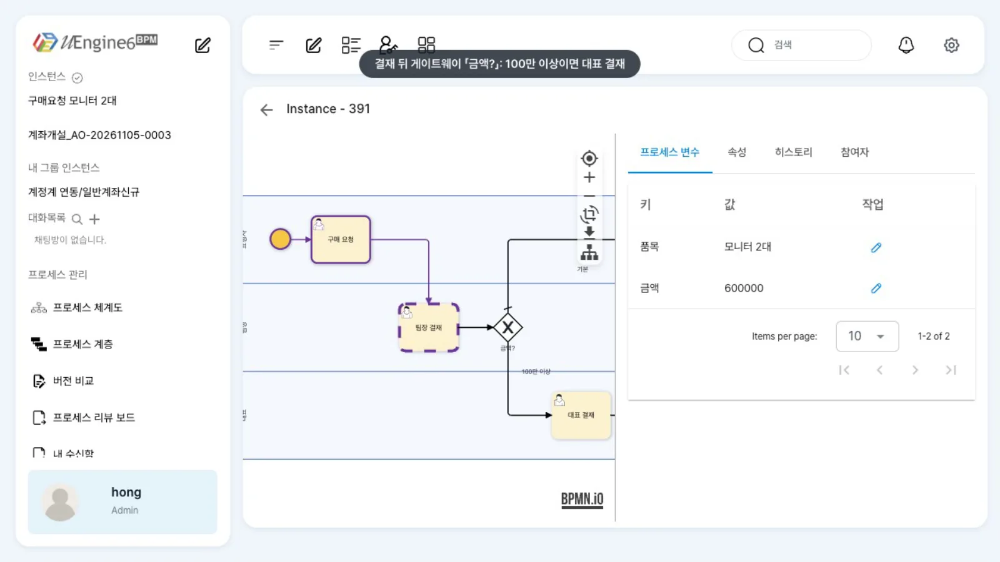
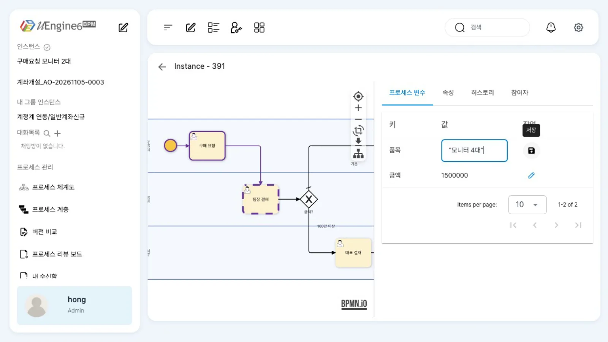
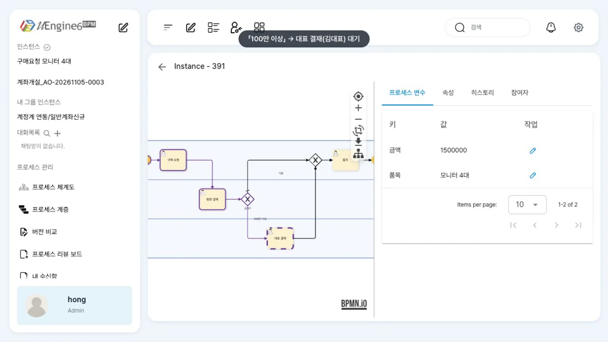

결재를 기다리는 인스턴스의 금액·품목을 관리자 화면에서 고치고, 수정한 금액이 다음 게이트웨이의 분기에 그대로 반영되는지 확인합니다. 값은 JSON으로 읽히므로 문자열은 큰따옴표로 감쌉니다.
무엇을 · 왜#
요청자가 금액을 잘못 입력하거나 외부 시스템이 틀린 값을 보내도 인스턴스를 처음부터 다시 시작하기 어려울 때가 있습니다. 관리자는 실행 중인 인스턴스의 프로세스 변수를 직접 고칠 수 있습니다(Camunda Operate의 variable 수정에 해당합니다).
- 고친 값은 그 뒤에 변수를 읽는 곳부터 반영됩니다. 이미 지나간 게이트웨이의 판단과 끝난 작업의 입력은 바뀌지 않습니다. 이미 지나간 분기를 바꾸려면 되돌리기와 함께 씁니다.
- 화면은 입력 칸의 내용을
JSON.parse로 해석해POST /instance/<ID>/variable/<변수>로 보냅니다. 숫자는1500000, 문자열은"모니터 4대"처럼 씁니다. 따옴표 없는 문자열은 JSON이 아니므로 저장 요청이 나가지 않습니다(칸은 닫히고 값은 그대로, 오류 표시 없음). - 서버는 받은 JSON을 그 형식대로 저장합니다(
1500000→ 정수,"…"→ 문자열). 게이트웨이 조건금액 >= 1000000은 값의 형식으로 비교하므로, 숫자 변수에는 따옴표 없는 숫자를 넣어야 합니다.
이 장의 예제는 인스턴스 찾고 살피기와 같은 튜토리얼/운영/구매요청(구매 요청 → 팀장 결재 → 「금액?」 → 100만 이상이면 대표 결재 → 발주)입니다. 모니터 2대, 600,000원으로 시작해 「팀장 결재」를 기다리는 인스턴스를 씁니다.
따라 하기#
- 인스턴스 열기. 홍길동(
hong)으로 「관리자 페이지」에서 인스턴스를 엽니다(/admin/<ID>). 그림에서 「팀장 결재」가 점선(현재 작업)이고, 그 뒤 게이트웨이 「금액?」에서 「100만 이상」과 「기본」으로 분기합니다. 「프로세스 변수」 탭에금액600000,품목모니터 2대가 있습니다.
팀장 결재 대기 인스턴스 - 숫자 고치기.
금액행의 연필을 누르면 값을 입력할 수 있게 됩니다.1500000을 넣고 같은 자리의 저장 아이콘을 누릅니다. 칸이 닫히면 저장된 것입니다. - 문자열 고치기 — 따옴표.
품목의 연필을 누르고모니터 4대라고만 써서 저장을 누르면 입력 칸은 닫히지만 값은모니터 2대그대로입니다. 저장 요청이 나가지 않았고, 화면에 오류 표시도 없습니다. 연필을 다시 눌러"모니터 4대"처럼 큰따옴표로 감싸 저장하면 값이 바뀝니다.
따옴표로 감싼 문자열 - 다시 열어 확인. 상세 화면을 다시 열면
금액1500000,품목모니터 4대입니다. - 결재 진행. 윤팀장(
yoon)이 업무 목록에서 「팀장 결재」를 열고 「완료」를 누릅니다. 게이트웨이는 이때의금액(1500000)으로 판단합니다. - 분기 확인. 관리자 상세 화면을 다시 열면 「100만 이상」 경로로 진행해 「대표 결재」가 점선으로 표시됩니다. 「히스토리」에 팀장 결재
COMPLETED, 대표 결재NEW(kim)가 있습니다. 처음 금액(600000)이었다면 「기본」 경로를 따라 발주로 진행했을 것입니다.
대표 결재로 간 흐름
설정 레퍼런스#
입력 칸에 쓰는 법#
| 변수 형식 | 입력 | 저장되는 값 |
|---|---|---|
| Number(정수) | 1500000 |
정수 1500000 |
| Number(실수) | 0.1 |
실수 |
| Text | "모니터 4대" |
문자열 |
| 참/거짓 | true |
불리언 |
| 목록(다중 생성 변수 등) | ["가람전자","나래부품"] |
목록 |
| 따옴표 없는 문자열 | 모니터 4대 |
저장 안 됨(칸은 닫히고 값은 그대로) |
이 장에서 실제로 저장을 시도한 것은 정수·문자열·따옴표 없는 문자열입니다. 실수·불리언·목록은 같은 JSON 규칙을 따르지만 화면에서 저장해 보지는 않았습니다.
API#
화면에서 호출하는 API와 같습니다. 본문은 JSON 값 하나입니다. 변수 이름이 한글이면 URL 인코딩합니다.
curl -X POST "http://localhost:9294/instance/<ID>/variable/$(python3 -c 'import urllib.parse;print(urllib.parse.quote("금액"))')" \
-H "Authorization: Bearer $TOKEN" -H 'Content-Type: application/json' -d '1500000'
curl -X POST "http://localhost:9294/instance/<ID>/variable/%ED%92%88%EB%AA%A9" \
-H "Authorization: Bearer $TOKEN" -H 'Content-Type: application/json' -d '"모니터 4대"'
curl -s http://localhost:9294/instance/<ID>/variables -H "Authorization: Bearer $TOKEN" # 확인(":금액" 키)
한글 이름으로 변수를 하나씩 조회하는 GET /instance/<ID>/variable/<한글>은 이 브랜치에서 빈 값을 돌려줍니다. 확인은 /variables로 하세요.
이 장에서 쓴 게이트웨이 조건#
{"condition": {"_type": "org.uengine.kernel.Evaluate", "key": "금액", "condition": ">=", "value": 1000000}}
알려진 제약#
- 따옴표 없는 문자열을 저장하면 오류 표시 없이 칸만 닫히고 값은 바뀌지 않습니다. 저장한 뒤에는 표의 값을 꼭 다시 보세요.
- 관리자 상세 화면은 10초마다 변수를 다시 읽고, 값이 바뀌었으면 표를 다시 그립니다. 그 순간 편집 중이던 칸이 닫히고 입력이 사라질 수 있으니, 연필을 누른 뒤에는 바로 입력하고 저장하세요.
- 변수 변경은 감사 기록에 남지 않습니다(이 브랜치는 변수 변경 기록 코드가 주석 처리돼 있고,
/audit은 빈 목록입니다). 누가 언제 고쳤는지는 따로 적어 두세요. - 변수를 고쳐도 이미 만들어진 작업의 입력 칸 값은 바뀌지 않습니다.
확인 문제#
금액을 `"1500000"`처럼 따옴표로 감싸 저장하면 대표 결재로 가나요?
장담할 수 없습니다. 따옴표로 감싼 값은 문자열로 저장되고, 게이트웨이(Evaluate)는 값의 형식으로 비교합니다. 숫자 변수에는 따옴표 없이 1500000을 넣으세요.
윤팀장이 결재를 끝낸 뒤에 금액을 150만으로 고치면 대표 결재가 생기나요?
아닙니다. 게이트웨이는 팀장 결재가 끝나는 순간 이미 분기를 결정했습니다. 고친 값은 그 뒤에 변수를 읽는 곳부터 쓰입니다. 다시 판단하게 하려면 「팀장 결재」로 되돌린 뒤 결재를 다시 받습니다.